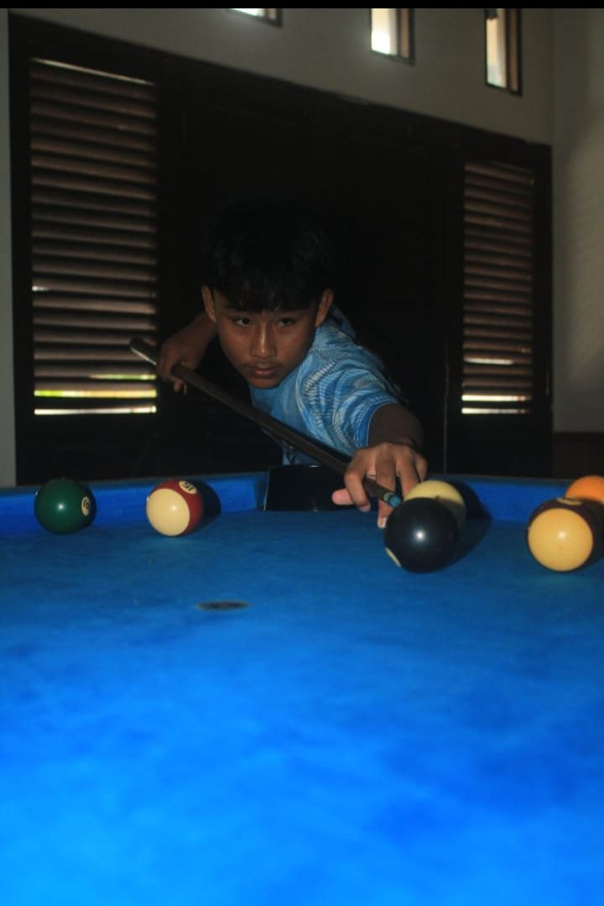

Suhail Khalifaturahman
Santri Al Bunyan & Web Dev
Mengintegrasikan ilmu dan teknologi melalui pengembangan web yang fungsional dan estetis.

Santri Al Bunyan & Web Dev
Mengintegrasikan ilmu dan teknologi melalui pengembangan web yang fungsional dan estetis.